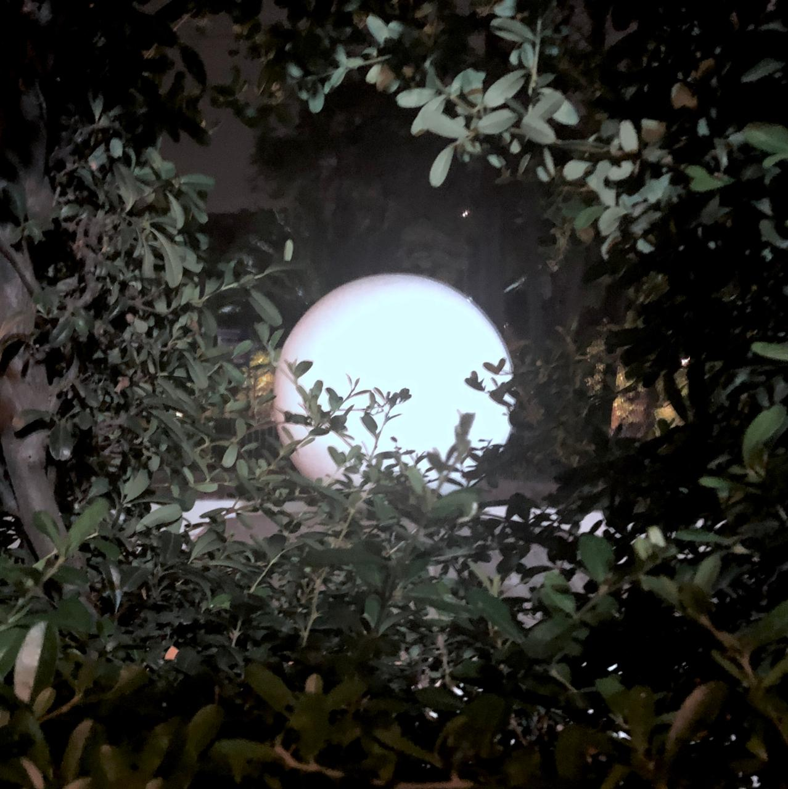

jesús es bajado de la cruz y puesto en los brazos de su madre maría.
pascua de 2020.
jesús cae por tercera vez.

pascua de 2020.
jesús es traicionado por judas.
pascua de 2020.

según las olas se formaron,
acochinado puerco -carmesí-;
sordas patas que monjilvidaron.
si el impresionismo fuese cierto,
ante el hielo me presentaría yerto.
me voy a chingar a un wey en Barranca del muerto.
el hijo del chacuaco.
verano de 2019.
características de un gallo fino:
bien jugado
bien representado
bien ganado
fiesta del gallo queretano de 2019.
oh! las aventuras del señor larre
verano de 2018.
trapiche.
cuernavaca de 2018.